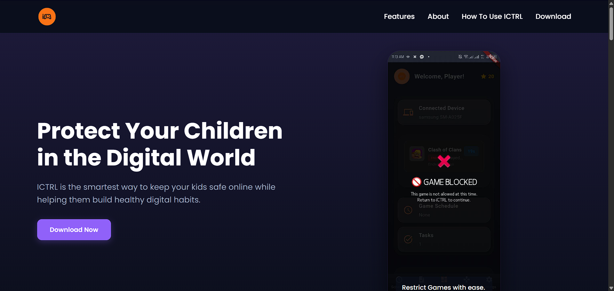
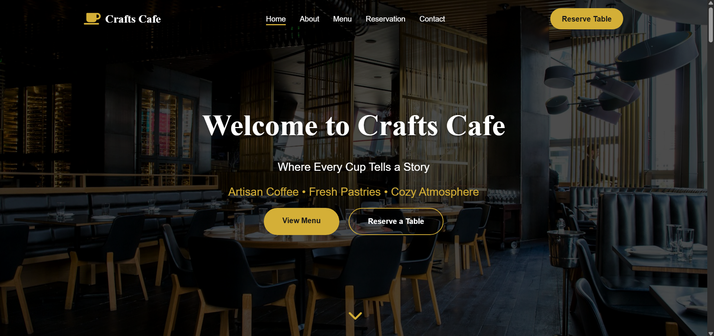
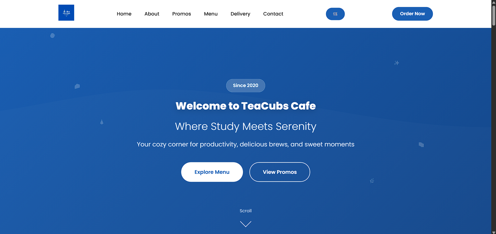
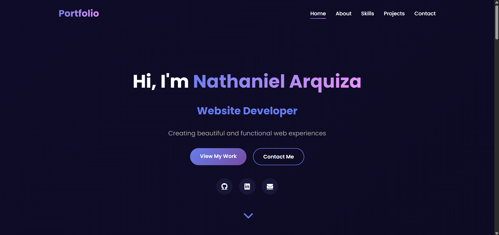

ICTRL — Parental Control App
A mobile app that helps parents monitor and manage their children's gaming activity, with real-time monitoring and notifications.
Flutter · Dart · Firebase · Android
IT Support / Help Desk candidate
I'm a BSIT graduate passionate about IT Support, Help Desk, and Technical Support. I enjoy troubleshooting Windows, software, networking, and website issues while helping users find clear, practical solutions.
My experience includes WordPress and Elementor, website maintenance, DNS troubleshooting, HTML, CSS, JavaScript, Git, GitHub, VS Code, Railway, and GoHighLevel. I'm continuously improving my technical skills and open to entry-level remote opportunities where I can contribute, learn, and grow in the IT industry.
What I can do today, and what I'm actively learning for support work.
I'd rather be upfront about this. I learn quickly and I'm looking for a team that will let me build this experience on the job.
A simple example of how I'd work through a common request: "My Wi-Fi says connected, but nothing loads."
When did it start? Did anything change? Is it only this device or everyone nearby?
Try another site and another device. Toggle Wi-Fi, check airplane mode, and reconnect to the network.
Can the device reach the router? Can it reach an IP address but not a website? That points to DNS rather than the connection.
Apply one change at a time, then ask the user to try again. Don't close it until they say it works.
Note the cause and the fix so the next person doesn't start from zero.
Things I've built and shipped. Each one has a live demo or source code you can check.

A mobile app that helps parents monitor and manage their children's gaming activity, with real-time monitoring and notifications.
Flutter · Dart · Firebase · Android

A responsive restaurant site with menu browsing, a table reservation flow, and a contact form.
HTML · CSS · JavaScript

A cafe site with menu filtering, a working cart, and delivery service integration.
HTML · CSS · JavaScript

The site you're on now: a responsive portfolio with my projects, skills, and contact details.
HTML · CSS · JavaScript
Coursework covering IT support, and software development
If your team is hiring for an entry-level IT Support or Help Desk role, I'd be glad to talk. Email is the fastest way to reach me.